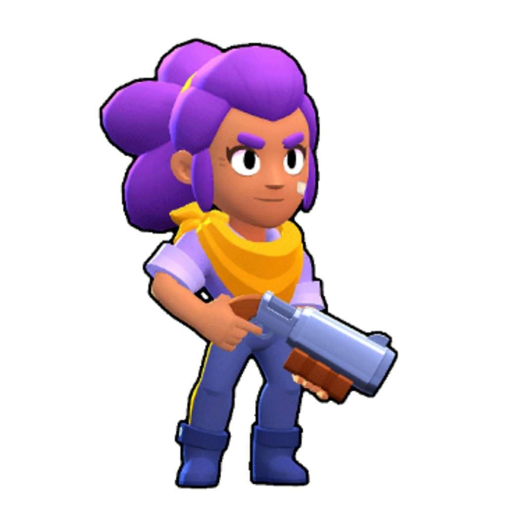
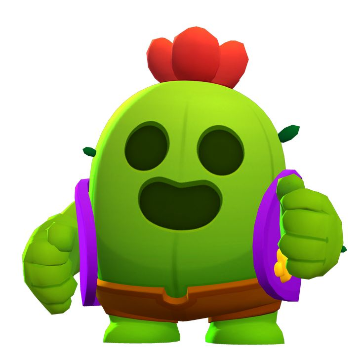
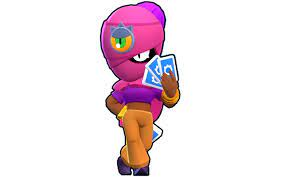

«Динамайк – старий шахтар та золотошукач, який обожнює все підривати. Ніщо не тішить його так, як запах диму та гуркіт каміння!»

«Шеллі – ідеальний рейнджер. Вона відповідальна, витривала і неперевершено поводиться з рушницею, і їй незрозуміло, як Кольт перетягнув увагу на себе...»

«Всі вважають Спайка просто милим помічником Кольта та Шеллі на ранчо, і ніхто не підозрює, який біль живе в його пораненій душі.»

«Карти Тари пророкують тобі суворі випробування! Але не хвилюйся, у неї повно чарівних талісманів, які вона готова продати за вигідною ціною.